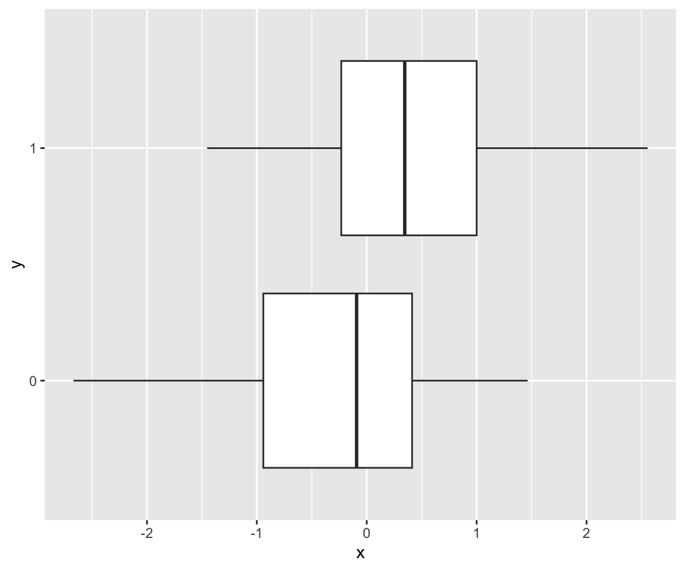

library(HDSinRdata)
library(tidyverse)17 Logic and Loops
Now that we have seen a lot of the functionality of R, we can start to build up more structured code using programming structures. To start, we introduce control flows. Control flows are code blocks that determine a sequence of code to be run. The two types of control flows we introduce are if-else blocks and loops.
17.1 Logic and Conditional Expressions
You may recall that we introduced logical operators in Chapter 3. We used these operators through conditional expressions such as when we indexed a data frame or the ifelse() or casewhen() functions. For example, in the following code we have vectors of systolic and diastolic blood pressure measurements and we write a logical operator to check if at least one of the systolic measurements is above 140 or if at least one of the diastolic measurements is above 90.
sbp_measurements <- c(131, 110, 125, 145, NA, 130)
dbp_measurements <- c(70, NA, 80)
any(sbp_measurements > 140, na.rm = TRUE) |
any(dbp_measurements > 90, na.rm = TRUE)
#> [1] TRUELet’s look at another example. Suppose these blood pressure measurements were taken consecutively but may have missing values. We want to create a single value to summarize the blood pressure for the patient. If we only have one blood pressure reading, then we use that value. However, if there is more than one blood pressure reading, then we drop the first observation and average the rest. We assume that not all values are NA. The following code uses an ifelse() function to do this by first checking if there is a single reading. If so, it takes the sum removing NA values to find that value. If not, we find all non-NA values and remove the first one before averaging.
sbp_measurements <- c(131, 110, 125, 145, NA, 130)
ifelse(sum(!is.na(sbp_measurements)) == 1,
sum(sbp_measurements, na.rm = TRUE),
mean(sbp_measurements[!is.na(sbp_measurements)][-1]))
#> [1] 128We could also accomplish the same thing using a control flow called an if-else statement. An if-else statement follows the following structure. First, we have a conditional statement. If the conditional statement is true, then the code in the if statement, the code within the first set of parentheses, is run. If not, then the code in the else statement is run. In this way, the control flow controls how our code is executed.
if (conditional statement){
block of code if the statement is TRUE
} else{
block of code if the statement is FALSE
}The next code chunk shows an example where the conditional statement is the same as previously. Note that since either the code in the if or else statement is run, the object avg_val is always defined.
sbp_measurements <- c(131, 110, 125, 145, NA, 130)
if(sum(!is.na(sbp_measurements)) == 1){
avg_val <- sum(sbp_measurements, na.rm = TRUE)
} else{
avg_val <- mean(sbp_measurements[!is.na(sbp_measurements)][-1])
}
avg_val
#> [1] 128One of the things to notice is that an if statement can only take in a single Boolean. It cannot take in a vector of Boolean values like the ifelse() and case_when() functions can. In that way, the ifelse() function is useful because it can be applied to multiple instances, but it isn’t as flexible if you want to run multiple lines of code depending on the logical statement since it doesn’t allow you to include a code block.
Let’s do another example of both an if-else statement and the ifelse() function to demonstrate this. In the following code, we use an if-else statement to determine if someone has hypertension. Note that here we have two lines of code that are run in each part - one line printing the result and the other is storing a 0/1 value. Try changing the values of sbp and dbp.
sbp <- 130
dbp <- 80
if(sbp > 140 | dbp > 90){
print("Hypertension")
hyp <- 1
} else{
print("No Hypertension")
hyp <- 0
}
#> [1] "No Hypertension"
hyp
#> [1] 0Now let’s replicate this with the ifelse() function which allows us to take in paired vectors of blood pressure measurements and return a vector of 0/1 values for each observation. The difference here is that we cannot include a print statement since we are only allowed one return value.
sbp_measurements <- c(131, 110, 125, 145, 130)
dbp_measurements <- c(90, 75, 80, 90, 80)
hyp <- ifelse(sbp_measurements > 140 | dbp_measurements > 90, 1, 0)
hyp
#> [1] 0 0 0 1 0Note that in the previous code we ignored NA values. In this case, changing sbp or dbp to NA causes an error in the if-else statement. This is because it does not understand which code block to run. The ifelse() can handle NA values and returns NA for observations with no TRUE/FALSE value. To accomplish this with the if-else statement, we can add in multiple conditions. In particular, we can add in more statements as follows. In this case, the first time we reach a true conditional statement, we run the code in that block. If no statements are true, then we run the last block of code. So we always run exactly one block of code.
if (conditional statement A){
block of code if the statement A is TRUE
} else if (conditional statement B){
block of code if the statement B is TRUE and statement A is FALSE
} else if (conditional statement C){
block of code if the statement C is TRUE and statement A and B are FALSE
} else{
block of code if statements A, B, and C are all FALSE
}Let’s use this with our hypertension example. In this case, we want to return NA if the answer is not known. Change the values so that you reach each code block. The order of the conditions matters because if the first statement is false, then we know at least one value is not NA. This also means that we would only check the fourth condition if the first three are false, which means that neither of the values can be NA.
sbp <- 130
dbp <- 80
if(is.na(sbp) & is.na(dbp)){
# Both are NA
hyp <- NA
} else if ((is.na(sbp) & dbp <= 90) | (is.na(dbp) & sbp <= 140)){
# One is NA and the other is below the threshold
hyp <- "Inconclusive"
} else if ((is.na(sbp) & dbp > 90) | (is.na(dbp) & sbp > 140)){
# One is NA and the other is above the threshold
hyp <- "Hypertension"
} else if (dbp > 90 | sbp > 140){
# Neither are NA and at least one is above the threshold
hyp <- "Hypertension"
} else{
# Neither are NA and neither is above the threshold
hyp <- "No Hypertension"
}
hyp
#> [1] "No Hypertension"We can rearrange these conditions to have one less condition. In the following code chunk, we first check if both are NA. Then we check that at least one value is above the threshold. This statement uses the fact that both can’t be NA since the first condition must be false. Next, in the third statement, if at least one value is NA then that must mean the other is below the threshold so the result is inconclusive.
sbp <- 130
dbp <- 80
if(is.na(sbp) & is.na(dbp)){
# Both are NA
hyp <- NA
} else if (sum(dbp > 90, sbp > 140, na.rm=TRUE) >= 1){
# At least one is above the threshold - sum removes NA values
hyp <- "Hypertension"
} else if (is.na(sbp) | is.na(dbp)){
# Inconclusive
hyp <- "Inconclusive"
} else{
# Neither are NA and neither is above the threshold
hyp <- "No Hypertension"
}
hyp
#> [1] "No Hypertension"This can still seem like a lot of conditions to replicate what we did in a single line with an ifelse() function. In general, we prefer a simpler format. Consider the following code. In this case, we have two vectors x and y that we want to plot. First, we check whether these vectors are numeric. If not, we convert them to factors. Rather than returning a value as we do with an ifelse() function, we are changing our data depending on the type of x and y. Note that these statements do not contain an else statement. That is because we don’t want to run any code when the condition is false.
# example x and y vectors
y <- factor(rbinom(100, 1, 0.3))
x <- rnorm(100, ifelse(y == 0, 0, 0.75))
# change x to factor(rbinom(100, 1, 0.3)) to observe
# convert x and y to factors if not numeric!
if (!is.numeric(x)){ x <- as.factor(x) }
if (!is.numeric(y)){ y <- as.factor(y) }
# find type of plot
if(is.factor(x) & is.factor(y)){
# bar plot
p <- ggplot() + geom_bar(aes(x = x, fill = y), position = "dodge")
} else if (!is.factor(y) | !(is.factor(x))){
# box plot when one numeric, one factor
p <- ggplot() + geom_boxplot(aes(x = x, y = y))
} else{
# scatter plot when both numeric
p <- ggplot() + geom_point(aes(x = x, y = y))
}
p
17.1.1 Practice Question
Use both an if-else statement and a case_when() function to find y as given by the following function. \[y = \begin{cases} 1 & x > 0 \\ 0 & x =0 \\ 0.1 & x < 0 \end{cases} \]
# Insert your solution here:
x <- 2 # change x to different values to check your solution!17.2 Loops
Another common control flow we use are loops. Loops capture code chunks we want to run multiple times. For this example, we use the NHANESSample data from the HDSinRdata package.
nhanes <- NHANESsample %>%
select(c(RACE, SEX, SBP1, DBP1, HYP, LEAD)) %>%
na.omit()In the following code, we are fitting a simple linear regression model for systolic blood pressure with the single covariate of blood lead level for each race group and storing the associated coefficients and p-values. This code is repetitive since we repeat the same steps for each group and the only element that is changing is the race group. This makes our code cluttered but also means we are prone to introducing errors. In fact, you can see that we have the wrong coefficient and p-value for the fourth model.
dat1 <- nhanes[nhanes$RACE == "Mexican American", ]
mod1 <- summary(lm(SBP1 ~ LEAD, data = dat1))
coef1 <- mod1$coefficients[2, 1]
pval1 <- mod1$coefficients[2, 4]
dat2 <- nhanes[nhanes$RACE == "Non-Hispanic White", ]
mod2 <- summary(lm(SBP1 ~ LEAD, data = dat2))
coef2 <- mod2$coefficients[2, 1]
pval2 <- mod2$coefficients[2, 4]
dat3 <- nhanes[nhanes$RACE == "Non-Hispanic Black", ]
mod3 <- summary(lm(SBP1 ~ LEAD, data = dat3))
coef3 <- mod3$coefficients[2, 1]
pval3 <- mod3$coefficients[2, 4]
dat4 <- nhanes[nhanes$RACE == "Other Hispanic", ]
mod4 <- summary(lm(SBP1 ~ LEAD, data = dat4))
coef4 <- mod3$coefficients[2, 1]
pval4 <- mod3$coefficients[2, 4]
dat5 <- nhanes[nhanes$RACE == "Other Race", ]
mod5 <- summary(lm(SBP1 ~ LEAD, data = dat5))
coef5 <- mod5$coefficients[2, 1]
pval5 <- mod5$coefficients[2, 4]
data.frame(
group = c("Mexican American", "Non-Hispanic White",
"Non-Hispanic Black", "Other Hispanic", "Other Race"),
coefs = c(coef1, coef2, coef3, coef4, coef5),
pvals = c(pval1, pval2, pval3, pval4, pval5))
#> group coefs pvals
#> 1 Mexican American 0.783 3.97e-11
#> 2 Non-Hispanic White 2.500 7.81e-138
#> 3 Non-Hispanic Black 2.005 1.83e-51
#> 4 Other Hispanic 2.005 1.83e-51
#> 5 Other Race 1.927 1.06e-11We can rewrite this code slightly. In this case, we create an object i which represents the index of the group. This change means that the only thing that changes for each group is that we update the value of i. This is much less prone to errors, but still long.
# Initialize results data frame
race_values <- c("Mexican American", "Non-Hispanic White",
"Non-Hispanic Black", "Other Hispanic", "Other Race")
df <- data.frame(
group = race_values,
coefs = 0,
pvals = 0)
i <- 1
dat <- nhanes[nhanes$RACE == df$group[i], ]
mod <- summary(lm(SBP1 ~ LEAD, data = dat))
df$coef[i] <- mod$coefficients[2, 1]
df$pval[i] <- mod$coefficients[2, 4]
i <- 2
dat <- nhanes[nhanes$RACE == df$group[i], ]
mod <- summary(lm(SBP1 ~ LEAD, data = dat))
df$coef[i] <- mod$coefficients[2, 1]
df$pval[i] <- mod$coefficients[2, 4]
i <- 3
dat <- nhanes[nhanes$RACE == df$group[i], ]
mod <- summary(lm(SBP1 ~ LEAD, data = dat))
df$coef[i] <- mod$coefficients[2, 1]
df$pval[i] <- mod$coefficients[2, 4]
i <- 4
dat <- nhanes[nhanes$RACE == df$group[i], ]
mod <- summary(lm(SBP1 ~ LEAD, data = dat))
df$coef[i] <- mod$coefficients[2, 1]
df$pval[i] <- mod$coefficients[2, 4]
i <- 5
dat <- nhanes[nhanes$RACE == df$group[i], ]
mod <- summary(lm(SBP1 ~ LEAD, data = dat))
df$coef[i] <- mod$coefficients[2, 1]
df$pval[i] <- mod$coefficients[2, 4]
df
#> group coefs pvals coef pval
#> 1 Mexican American 0 0 0.783 3.97e-11
#> 2 Non-Hispanic White 0 0 2.500 7.81e-138
#> 3 Non-Hispanic Black 0 0 2.005 1.83e-51
#> 4 Other Hispanic 0 0 1.242 8.46e-09
#> 5 Other Race 0 0 1.927 1.06e-11We now write this code as a for loop. A for loop contains two pieces. First, we have an iterator. An iterator traverses an object that has a natural order. Most of the time we traverse over vectors but we could also have a list object. The second piece is a code block. This code is run for each value of the iterator.
for (iterator_name in object){
code to run for each value of the iterator
}Two simple for loops are given in the next code chunk. In the first loop, our iterator goes through the vector 1:5 whereas in the second one our iterator iterates through the vector of names. In the first loop, we traverse the numbers 1 to 5 and for each number we run the code that squares the number. In each iteration, we name the current number we are on to be i. That means that the first time through the loop i is equal to 1, the second time i has value 2, etc. In the second loop, our iterator is also a vector but this time it is names. In this case, in each iteration the object name represents the current name we are on as we traverse the vector of names. In particular, the first time through the loop name is equal to “Alice”, the second time name has value “Bob”, and so forth.
for (i in 1:5){
print(sqrt(i))
}
#> [1] 1
#> [1] 1.41
#> [1] 1.73
#> [1] 2
#> [1] 2.24names <- c("Alice", "Bob", "Carol")
for (name in names){
print(paste("Hello,", name))
}
#> [1] "Hello, Alice"
#> [1] "Hello, Bob"
#> [1] "Hello, Carol"Let’s apply this to our example. First, we use a numeric iterator i that takes on values 1 to 5. This directly replicates our previous code in which the value of i changed for each race group. Our result matches our previous result.
df <- data.frame(group = race_values, coefs = 0, pvals = 0)
for (i in 1:5){
dat <- nhanes[nhanes$RACE == df$group[i], ]
mod <- summary(lm(SBP1 ~ LEAD, data = dat))
df$coef[i] <- mod$coefficients[2, 1]
df$pval[i] <- mod$coefficients[2, 4]
}
df
#> group coefs pvals coef pval
#> 1 Mexican American 0 0 0.783 3.97e-11
#> 2 Non-Hispanic White 0 0 2.500 7.81e-138
#> 3 Non-Hispanic Black 0 0 2.005 1.83e-51
#> 4 Other Hispanic 0 0 1.242 8.46e-09
#> 5 Other Race 0 0 1.927 1.06e-11Let’s show a different way we could write the same loop. This time we make our iterator be the race group name. In this case, we update how we are storing the coefficients and p-values because we are not iterating over an index.
coefs <- c()
pvals <- c()
for (group in race_values){
dat <- nhanes[nhanes$RACE == group, ]
mod <- summary(lm(SBP1 ~ LEAD, data = dat))
coefs <- c(coefs, mod$coefficients[2, 1])
pvals <- c(pvals, mod$coefficients[2, 4])
}
data.frame(group = race_values, coefs = coefs, pvals = pvals)
#> group coefs pvals
#> 1 Mexican American 0.783 3.97e-11
#> 2 Non-Hispanic White 2.500 7.81e-138
#> 3 Non-Hispanic Black 2.005 1.83e-51
#> 4 Other Hispanic 1.242 8.46e-09
#> 5 Other Race 1.927 1.06e-11Another type of loop is a while loop. A while loop does not have an iterator. Instead, a while loop checks a condition. If the condition is true, the loop runs the code in the code block. If the condition is false, it stops and breaks out of the loop. That is, the code is run until the condition is no longer met.
while (condition){
code to run each iteration
}The following code gives an example of a simple while loop. In this case, the loop keeps dividing x by 2 until it is below a certain value of 3. In this case, x starts above 3 so the condition starts off being true and we would divide x by 2 to get 50. Since 50 is still greater than 3, the code block is run again, etc. Once x reaches a value of 1.5625 the condition no longer holds and the code stops. Note that if the condition was x > -1 it would hold indefinitely, creating what is called an infinite loop.
x <- 100
while(x > 3){
x <- x/2
}
x
#> [1] 1.56Let’s do another example with a bigger code block. The following code creates a Poisson process of arrivals where in each iteration we generate the next arrival time by drawing from an exponential distribution. Once we reach the end of the time interval (i.e. the current time is greater than 10) we stop. If we re-run this chunk of code, we might get a different length vector.
arrivals <- c()
time <- 0
next_arrival <- rexp(1, rate = 3)
# Find the time of all arrivals in the time period [0,10]
while(time+next_arrival <= 10){
# Update list of arrivals and current time
arrivals <- c(arrivals, next_arrival)
time <- time + next_arrival
# Generate the next arrival
next_arrival <- rexp(1, rate = 3)
}Given we have two types of loops, how do you know which to use? You should use a for loop when you know how many times you go through the loop and/or if there is a clear object to iterate through. On the other hand, while loops are useful if you don’t know how many times you go through the loop and you want to iterate through the loop until something happens. Within a for loop, you can also break out early using the break operator. This stops the loop similar to a while loop but is sometimes less succinct. The following code loops through the blood pressure measurements we defined earlier to find if any of the observations meet the criteria for hypertension.
# Start with assumption that the result is FALSE
res <- FALSE
for (i in 1:length(sbp_measurements)){
# If above threshold, update the result and stop the loop
if (sbp_measurements[i] > 140 | dbp_measurements[i] < 90){
res <- TRUE
break
}
}17.2.1 Practice Question
Use a loop to find the smallest integer number x such that \(2.3^x \geq 100\). The answer should be 6.
# Insert your solution here:17.3 Avoiding Control Flows with Functions
We just introduced logic and loops and now I’m going to tell you to avoid them when you can. Control flows are very useful programming structures, but sometimes the same thing can be done without them. For example, we can find whether there is at least one observation that has hypertension using a single line of code.
any(sbp_measurements > 140 | dbp_measurements > 90)
#> [1] TRUEAnother example we saw previously was using an ifelse() or case_when() function instead of an if-else statement. These two functions are vectorized functions. That means that the function is evaluated on a vector of values rather than having to loop through each value separately. Vectorized functions return a vector or results of the same size as your input. That means that if you needed to do a computation on every element of a vector you could either loop through all the elements and call that function or you can take advantage of the vectorized structure and call the function on the whole vector. This is generally cleaner and more efficient. The any() function up not a vectorized function since it returns a single TRUE/FALSE value but it also helps to make our code cleaner.
Another tool that can help with brevity in this manner is the family of apply functions. These are loop-hiding functions. In Chapter 3, we saw the apply(X, MARGIN, FUN) function. This function called the function FUN on either the rows (MARGIN = 1) or columns (MARGIN = 2) of X, which is data frame or matrix X. In the next code chunk, we generate a random matrix X and compute the column means using a loop and using the apply() function. We can see that the version with the apply() function is simpler.
X <- matrix(rnorm(100), nrow = 20, ncol = 5)
# Apply mean function
apply(X, 2, mean)
#> [1] -0.2811 0.1445 0.0672 0.1007 -0.4775
# Loop through columns
means <- rep(0, ncol(X))
for (i in 1:ncol(X)){
means[i] <- mean(X[, i])
}
means
#> [1] -0.2811 0.1445 0.0672 0.1007 -0.4775Another loop-hiding function is lapply(X, FUN). This function applies the function X to each element of X. In this case, X functions like an iterator and FUN is a function representing what we want to do in each iteration. The result is returned as a list of the function output for each value of X. We use this function in the regression context we saw earlier. Here, X is our vector of groups and we have written a custom function to be able to call that code on each group. We learn how to write our own functions in Chapter 18.
find_lm_results <- function(group){
# Runs simple linear regression and returns coefficient and p-value
dat <- nhanes[nhanes$RACE == group, ]
mod <- summary(lm(SBP1 ~ LEAD, data = dat))
return(mod$coefficients[2, c(1, 4)])
}
lapply(race_values, find_lm_results)
#> [[1]]
#> Estimate Pr(>|t|)
#> 7.83e-01 3.97e-11
#>
#> [[2]]
#> Estimate Pr(>|t|)
#> 2.50e+00 7.81e-138
#>
#> [[3]]
#> Estimate Pr(>|t|)
#> 2.01e+00 1.83e-51
#>
#> [[4]]
#> Estimate Pr(>|t|)
#> 1.24e+00 8.46e-09
#>
#> [[5]]
#> Estimate Pr(>|t|)
#> 1.93e+00 1.06e-11Another useful function is sapply(X, FUN). This function operates similarly to lapply(). However, it then tries to simplify the output to be either a vector or matrix. You can remember the difference by remembering the l in lapply() stands for list and the s in sapply() stands for simplify.
sapply(race_values, find_lm_results)
#> Mexican American Non-Hispanic White Non-Hispanic Black
#> Estimate 7.83e-01 2.50e+00 2.01e+00
#> Pr(>|t|) 3.97e-11 7.81e-138 1.83e-51
#> Other Hispanic Other Race
#> Estimate 1.24e+00 1.93e+00
#> Pr(>|t|) 8.46e-09 1.06e-11The last loop-hiding function we introduce is replicate(n, expr). This runs the code expression expr n times and returns the results. By default, this simplifies the output similar to sapply(). If you set simplify=FALSE, it returns a list. The following code generates a random matrix and computes the column means six times.
replicate(6, colMeans(matrix(rnorm(100), ncol = 5)))
#> [,1] [,2] [,3] [,4] [,5] [,6]
#> [1,] 0.3333 0.2405 -0.0444 0.4054 0.1193 0.363
#> [2,] 0.0678 0.0471 0.2933 -0.0740 -0.0780 0.505
#> [3,] -0.3125 0.0660 0.3601 0.1375 -0.0839 0.156
#> [4,] 0.2626 0.0703 0.0605 0.0765 -0.0778 0.631
#> [5,] -0.0692 -0.2719 -0.2149 0.2076 0.1719 0.14217.4 Exercises
For these exercises, we use the pain data from the HDSinRdata package. You can use the help operator ?pain to learn more about the source of these data and to read its column descriptions.
Create a new column
PAT_RACE_SIMPthat represents a patient’s race using three categories: White, Black, or Other. First, do this using thecase_when()function. Then, use a loop and if-else statement to accomplish the same thing.For each category of your new column
PAT_RACE_SIMP, subset the data to that group and find the five body regions with the highest proportion of patients with pain. Your solution should use two nested loops. Then, rewrite your code without using a loop.The following code sorts a numeric vector
xbut is missing comments to explain the steps. Read through the code and add your own comments to explain how this works.x <- c(1,3,0,3,2,6,4) n <- length(x) for (i in 1:(n-1)){ next_ind <- i for (j in (i+1):n){ if (x[j] < x[next_ind]){ next_ind <- j } } temp <- x[i] x[i] <- x[next_ind] x[next_ind] <- temp } x #> [1] 0 1 2 3 3 4 6Write code using a loop that generates a series of Bernoulli random variables with probability of success of 0.5 until at least \(r <- 6\) successes occur. What distribution does this correspond to?